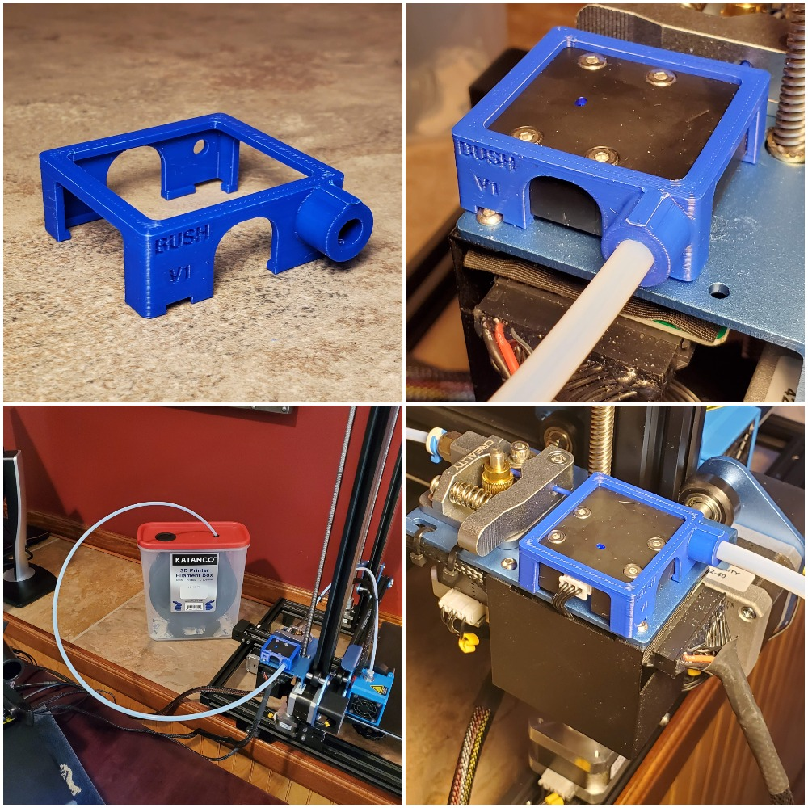
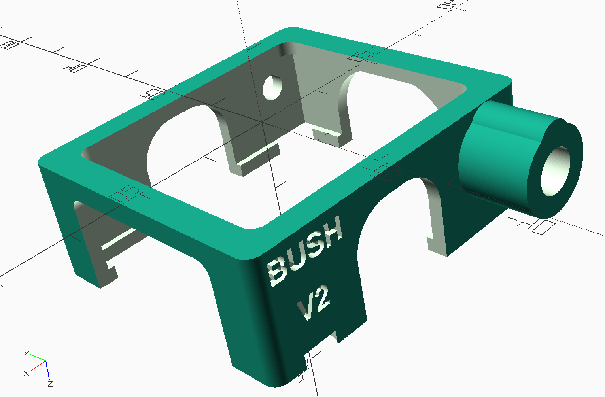
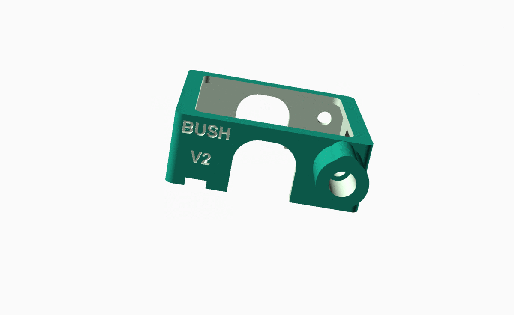

KATAMCO Filament Adapter

This was my first custom part. KATAMCO makes this really awesome filament
box. The only problem I had was that the weight of the filament tube was putting stress on the filament and
a significant bed at higher z levels. I used OpenSCAD which has an extremely
low learning curve and is simple fantastic. I started with this beginners
tutorial. I learned about the really cool minkowski transformation from here. I even published this adapter on Thingiverse!


Tolerances
The tube was 6 mm and using 6.2 mm for the port resulted in a snug/friction fit.
The fit to the box was a trial and error game. I'll need to spend some more time in this area understanding
my printers dimensional accuracy in all planes and how to adjust measurements accordingly... Calipering the
standard 20 mm xyz cube, the results are: x(+0.8), y(+0.06), and z(-0.25).
Files
creality-v2-katamcoguide-tube-adapter.scad
creality-v2-katamcoguide-tube-adapter.stl